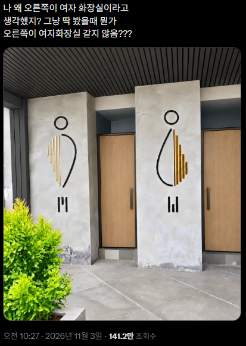
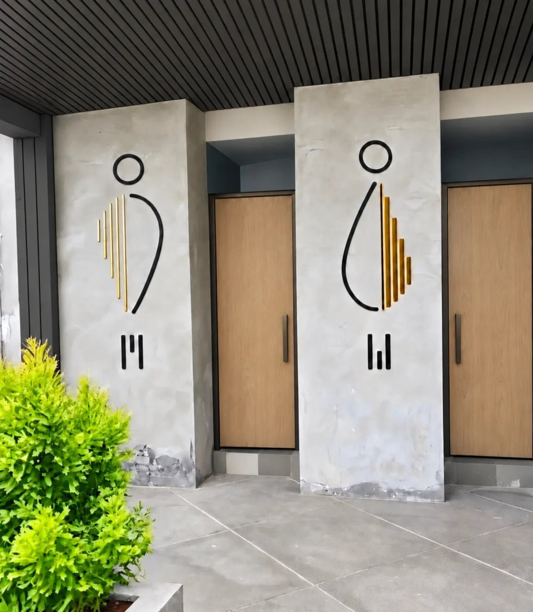

82 · 17 · 3 시간 전 · 원문


아래 짝대기 3개가 M이랑 W 표시라고 함...
수집 당시 댓글 17개
벨즈 · 3 시간 전
가다김씨 · 3 시간 전
문돌이들이 세상에 필요한 이유. 예술하는 애들은 사회성이 상당히 떨어지는 경우가 허다하다.
큰자지 · 3 시간 전
평소에 남자화장실이 왼쪽처럼 되있어서왼쪽만 보면 남자화장실 같긴함근데 둘다보면 햇갈림
↳ 답글 · 년째도쿄생활중 · 3 시간 전
평소 어디서 저런걸 봄??알려주셈
↳ 답글 · 지하왕국 · 2 시간 전
🚻 왼은 역삼각형 어깨넓은 남자 오는 정삼각형 치마입은 여자 근데 밑에 M W 는 그냥 알파벳제대로 쓰는게 어땠을까 싶네 ㅋㅋ
곡광이 · 3 시간 전
♂♀
bambi · 2 시간 전
들어가기 전에 욕 한번 할 것 같긴 한데
울트라까칠대마왕 · 2 시간 전
저런곳도 있구나 ㅎㅎ 어디에 있어요?? 헷갈림 ㅠ
바나나맛분유 · 2 시간 전
좆같이도 해놨네 염병
민트초코갈비찜 · 2 시간 전
남성의 역삼각형 몸매와 여성의 골반이 넓은체형을 형상화한거긴한데기존에 쓰던거 안쓸꺼면 색이라도 파랑 빨강으로 맞추던가하지 애초에 잘못된디자인이구만
탕후보 · 2 시간 전
좆이랑 보지 아님?
↳ 답글 · 쩝쩝박사 · 2 시간 전
주작레이더 · 2 시간 전
실패한디자인
제트기 · 2 시간 전
지랄하네 진짜
파송송심영탁 · 1 시간 전
누가봐도 좌어깨 우골반인데?
비리보빔밥 · 1 시간 전
O OM W
IIllllIIIlI · 55 분 전
왼쪽은 하체(다리사이 자지)오른쪽는 상체(몸통아래 보지)
댓글
수집 당시 댓글 17개
벨즈 · 3 시간 전
가다김씨 · 3 시간 전
문돌이들이 세상에 필요한 이유. 예술하는 애들은 사회성이 상당히 떨어지는 경우가 허다하다.
큰자지 · 3 시간 전
평소에 남자화장실이 왼쪽처럼 되있어서
왼쪽만 보면 남자화장실 같긴함
근데 둘다보면 햇갈림
· 년째도쿄생활중 · 3 시간 전
평소 어디서 저런걸 봄??알려주셈
· 지하왕국 · 2 시간 전
🚻 왼은 역삼각형 어깨넓은 남자 오는 정삼각형 치마입은 여자 근데 밑에 M W 는 그냥 알파벳제대로 쓰는게 어땠을까 싶네 ㅋㅋ
곡광이 · 3 시간 전
♂♀
bambi · 2 시간 전
들어가기 전에 욕 한번 할 것 같긴 한데
울트라까칠대마왕 · 2 시간 전
저런곳도 있구나 ㅎㅎ 어디에 있어요?? 헷갈림 ㅠ
바나나맛분유 · 2 시간 전
좆같이도 해놨네 염병
민트초코갈비찜 · 2 시간 전
남성의 역삼각형 몸매와 여성의 골반이 넓은체형을 형상화한거긴한데
기존에 쓰던거 안쓸꺼면 색이라도 파랑 빨강으로 맞추던가하지 애초에 잘못된디자인이구만
탕후보 · 2 시간 전
좆이랑 보지 아님?
· 쩝쩝박사 · 2 시간 전
주작레이더 · 2 시간 전
실패한디자인
제트기 · 2 시간 전
지랄하네 진짜
파송송심영탁 · 1 시간 전
누가봐도 좌어깨 우골반인데?
비리보빔밥 · 1 시간 전
O O
M W
IIllllIIIlI · 55 분 전
왼쪽은 하체(다리사이 자지)
오른쪽는 상체(몸통아래 보지)